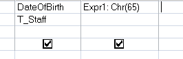

Function that returns the character represented by an Ascii code.
Syntax
Chr (ascii_code)
Chr (65) will return A
The Chr function can also be used in an SQL query.
Chr() will return a Variant, you can also use Chr$() to return a String.
You should use Chr() if there is any chance of a Null value, since assigning Null to a String will raise an error.
Use the ChrB function with byte character codes.
Examples
In a query:

In VBA:
Dim strDemo As String
strDemo = Chr (65)
> A
“You can easily judge the character of a man by how he treats those who can do nothing for him” ~ James D. Miles
Related:
Asc - Returns the Ascii code of a character.